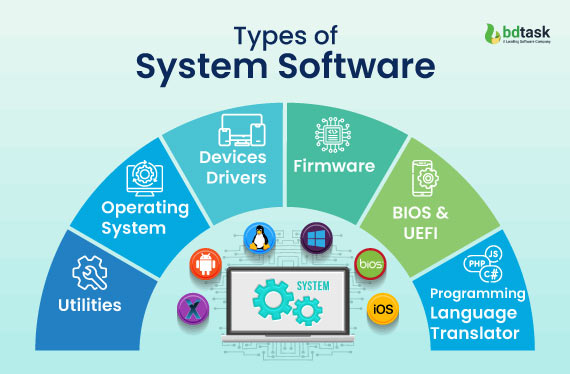

System Software

System software refers to the low-level software that manages and controls a computer’s hardware and provides basic services to higher-level software. There are two main types of software: systems software and application software. Systems software includes the programs that are dedicated to managing the computer itself, such as the operating system, file management utilities, and disk operating system (or DOS).
System software is software that provides a platform for other software. Some examples can be operating systems, antivirus software, disk formatting software, computer language translators, etc. These are commonly prepared by computer manufacturers. This software consists of programs written in low-level languages, used to interact with the hardware at a very basic level. System software serves as the interface between the hardware and the end users.
System software refers to the collection of programs and software components that enable a computer or computing device to function properly. It acts as an intermediary between the user and the computer hardware, allowing the user to interact with the hardware and use various applications and programs. Some common types of system software include operating systems (such as Windows, macOS, or Linux), device drivers, utility programs, programming languages, and system libraries.
Operating systems are the most important type of system software, as they provide the foundational framework for all other software and applications to run on the computer. They manage computer resources, such as memory and processing power, and provide a user interface for users to interact with the system. Device drivers are another important type of system software, as they allow the operating system to communicate with hardware devices such as printers, scanners, and graphics cards. Utility programs provide additional functionality to the operating system, such as disk defragmentation, virus scanning, and file compression.
Examples of System Software
System software is a type of computer program that is designed to run a computer’s hardware and application programs and examples of system software include operating systems (OS) (like macOS, Linux, Android, and Microsoft Windows), game engines, search engines(like google,Bing,Yahoo!), industrial automation, computational science software, and (SaS)software as a service applications.
Operating systems (OS): Windows, Linux, macOS, etc.
Device drivers: software that enables the communication between hardware and OS.
Firmware: pre-installed low-level software that controls a device’s basic functions.
Utility software: tools for system maintenance and optimization.
Boot loaders: software that initializes the OS during startup